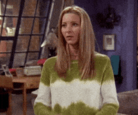

Budeš letos mým Valentýnem? Prosím. 🥰
ANO
NE
Máš poslední šanci si to rozmyslet! 🔪
⬇
⬆
➡
⬅
Ok, rozmyslela jsem si to.

Tak to máš jediný štěstí! 🍀
Chci zjistit co mě čeká
✨ Letošní Valentýn ti nabídne: 🚢
Společnou návštěvu výstavy, kde se vydáme po stopách Titanicu. 🌊💙
A co bude dál? 👉
A pak si k večeři dáme
pořádnej sushi dlabanec! 🍣